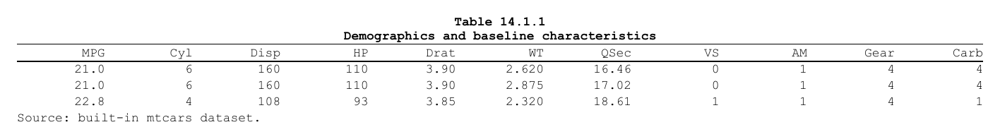
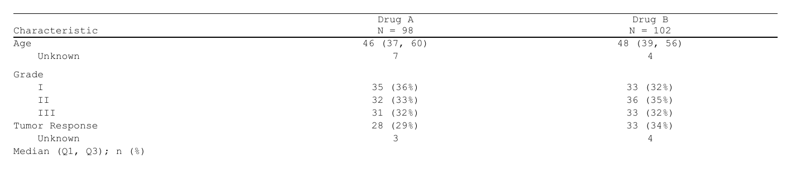
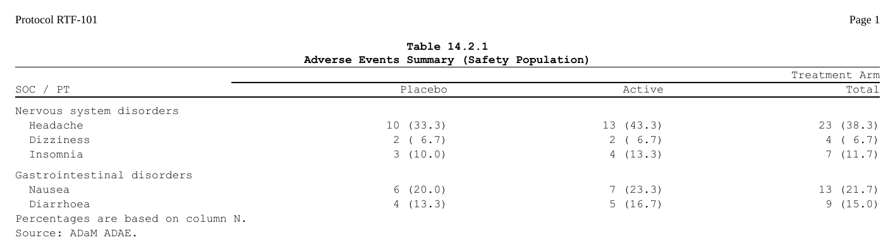

The second path. This article is about bringing a table you already have. When the statistics are in a cards / cardx ARD, the recommended route is a table plan – see Get started and Tables from an ARD.
The gt package by Posit gives
users a friendly grammar for display tables –
cols_label(), tab_header(),
tab_spanner(), cols_align(),
tab_source_note(), tab_footnote(), … Clinical
summary tables are very often produced by gtsummary
(tbl_summary(), tbl_regression(), …) or tfrmt, both of
which ultimately render to a gt_tbl. When you move from the
HTML world to the clinical TFL world, you want that same metadata to
flow into the RTF document – not be re-stated in a different
vocabulary.
The recommended workflow: as_rtftables()
[as_rtftables()] is the single entry point. It takes a table object
(gt_tbl, a gtsummary table, a
data.frame/tibble, or a list of these), reads all of the
table’s metadata, paginates the body, and returns a list of
ready-to-render [rtftable()] objects – one per page:
gt / gtsummary / tfrmt as_rtftables() rtf_tables()
------------------------ -> read metadata + paginate -> add to doc -> generate_rtfreport()
(a gt_tbl) (list of rtftable pages) (titles /
footnotes
flow through)Show code
library(gt)
g <- gt(head(mtcars, 3)) |>
cols_label(mpg = "MPG", cyl = "Cyl", disp = "Disp", hp = "HP",
drat = "Drat", wt = "WT", qsec = "QSec",
vs = "VS", am = "AM", gear = "Gear", carb = "Carb") |>
tab_header(
title = "Table 14.1.1",
subtitle = "Demographics and baseline characteristics"
) |>
tab_source_note("Source: built-in mtcars dataset.")
pages <- as_rtftables(g) # read = TRUE by default
length(pages) # one page here#> [1] 1
class(pages[[1]])
#> [1] "rtftable"
Hand the pages straight to [rtf_tables()]. The page-level title and
source notes travel with each page (as rtf_titles /
rtf_footnotes attributes) and are picked up automatically –
no read_gt flag needed:
Show code
doc <- rtf_document() |>
rtf_section(page = 1, header = NULL, footer = NULL) |>
rtf_tables(pages)
doc$titles[[1]] # title + subtitle, read from the gt object#> [1] "Table 14.1.1"
#> [2] "Demographics and baseline characteristics"
doc$footnotes[[1]] # source note
#> [1] "Source: built-in mtcars dataset."For a single page you can use the convenience wrapper
[as_rtftable()], which returns one rtftable instead of a
list:
tbl <- as_rtftable(g) # == as_rtftables(g, split = "none")[[1]]
class(tbl)
#> [1] "rtftable"gtsummary in one line
A gtsummary table is converted to a gt_tbl automatically
(via gtsummary::as_gt()), so the workflow is identical:
Show code
library(gtsummary)
s <- tbl_summary(
trial[c("age", "grade", "response", "trt")],
by = trt
)
pages <- as_rtftables(s)
doc <- rtf_document() |>
rtf_section(page = 1, header = NULL, footer = NULL) |>
rtf_tables(pages)
out <- tempfile(fileext = ".rtf")
generate_rtfreport(doc, out, overwrite = TRUE)
file.exists(out)#> [1] TRUE
gtsummary applies row indentation and bold group-header rows through HTML/CSS styling that RTF cannot reproduce; those visual details are dropped (see Limitations below). Everything structural – column labels, spanning headers, the stub / group rows, footnote texts and marks – comes through.
Splitting a long table across pages
as_rtftables() splits a table that is too tall for one
page; pass split and max_rows:
Show code
long <- data.frame(
Parameter = sprintf("Row %02d", 1:8),
Value = round(rnorm(8), 2),
stringsAsFactors = FALSE
)
pages <- as_rtftables(long, split = "group_force", max_rows = 4,
group_col = "Parameter")
length(pages) # 2 pages#> [1] 2
vapply(pages, function(p) nrow(p$data), integer(1))
#> [1] 4 4Per-cell styles read from a gt object are sliced to match each page automatically.
What gets read
read = TRUE (the default) is shorthand for a set of
independent tokens, grouped into phases. Pass
read = c("col_header", "titles") to opt in selectively.
-
Phase A (shape-preserving, “safe”)
-
"col_header"–cols_label()-> the rtftable’s column header -
"alignment"–cols_align()-> per-columncol_spec[[j]]$align -
"titles"–tab_header(title, subtitle)-> the pagetitles[[i]]block -
"source_notes"–tab_source_note()-> the pagefootnotes[[i]]block
-
-
Phase B (structural, modifies the column space)
-
"spanning"–tab_spanner()-> multi-row col_header with spanning cells -
"widths"–cols_width()->column_widths_twips("NNpx") orcol_rel_width("NN%") -
"hidden"–cols_hide()-> drop the column before rendering
-
-
Phase C (structural, modifies the row space + extra
notes)
-
"footnotes"–tab_footnote()(any anchor) -> appended to the pagefootnotes[[i]]block -
"stub"–groupname_col = ...,rowname_col = ...,tab_stubhead()-> group-transition rows and a stubhead-labelled stub column
-
-
Phase D (per-cell formatting)
-
"styles"–tab_style(cell_text(...))-> per-cell bold / italic / underline / indent, carried on the rtftable’scell_stylesfield -
"footnote_marks"– the in-cell footnote marks gt renders as<sup>N</sup>-> rtfreporter^{N}superscript markup (matching the texts read by"footnotes") -
"strip_html"– remove stray HTML left in cell values (<br>-> line break; other tags dropped)
-
Anything listed in read = c(...) is read; anything left
out falls back to the rtfreporter default (e.g. column names from
names(data)).
End-to-end example: a TFL-style adverse-events table
This is the kind of table you would normally build by hand:
Show code
ae <- data.frame(
SOC = c("Nervous system disorders",
"Nervous system disorders",
"Nervous system disorders",
"Gastrointestinal disorders",
"Gastrointestinal disorders"),
PT = c("Headache", "Dizziness", "Insomnia",
"Nausea", "Diarrhoea"),
Placebo_n = c("10 (33.3)", "2 ( 6.7)", "3 (10.0)",
"6 (20.0)", "4 (13.3)"),
Active_n = c("13 (43.3)", "2 ( 6.7)", "4 (13.3)",
"7 (23.3)", "5 (16.7)"),
Total_n = c("23 (38.3)", "4 ( 6.7)", "7 (11.7)",
"13 (21.7)", "9 (15.0)"),
stringsAsFactors = FALSE
)
ae_gt <-
gt(ae, groupname_col = "SOC", rowname_col = "PT") |>
cols_label(PT = "Preferred Term",
Placebo_n = "Placebo",
Active_n = "Active",
Total_n = "Total") |>
tab_stubhead(label = "SOC / PT") |>
cols_align("right", columns = c(Placebo_n, Active_n, Total_n)) |>
tab_spanner(label = "Treatment Arm",
columns = c(Placebo_n, Active_n, Total_n)) |>
tab_header(title = "Table 14.2.1",
subtitle = "Adverse Events Summary (Safety Population)") |>
tab_source_note("Source: ADaM ADAE.") |>
tab_footnote("Percentages are based on column N.")Convert it with as_rtftables() and add the pages to a
document:
Show code
doc <- rtf_document() |>
rtf_section(
page = 1,
header = rtf_header(rows = list(c(l = "Protocol RTF-101",
r = "Page {AUTO_PAGE}"))),
footer = NULL
) |>
rtf_tables(as_rtftables(ae_gt))
doc$contents[[1L]] now has:
tbl <- doc$contents[[1L]]
nrow(tbl$data) # 5 PT rows + 2 SOC group rows
#> [1] 7
tbl$data$rowname[1:3] # the SOC's heading row, then its first two PTs, indented
#> [1] "Nervous system disorders" " Headache"
#> [3] " Dizziness"
tbl$col_header # spanner row + stubhead-labelled bottom row
#> [[1]]
#> [[1]][[1]]
#> [[1]][[1]]$from
#> [1] 1
#>
#> [[1]][[1]]$to
#> [1] 1
#>
#> [[1]][[1]]$label
#> [1] ""
#>
#>
#> [[1]][[2]]
#> [[1]][[2]]$from
#> [1] 2
#>
#> [[1]][[2]]$to
#> [1] 4
#>
#> [[1]][[2]]$label
#> [1] "Treatment Arm"
#>
#>
#>
#> [[2]]
#> [1] "SOC / PT" "Placebo" "Active" "Total"Page-level blocks:
doc$titles[[1L]] # title + subtitle
#> [1] "Table 14.2.1"
#> [2] "Adverse Events Summary (Safety Population)"
doc$footnotes[[1L]] # footnote text + source note (in that order)
#> [1] "Percentages are based on column N." "Source: ADaM ADAE."Render to RTF:
out <- tempfile(fileext = ".rtf")
generate_rtfreport(doc, out, overwrite = TRUE)
file.exists(out)
#> [1] TRUEPrecedence: explicit arguments beat gt-extracted values
The translation honours the documented precedence chain. If you
specify col_header = c("A", "B", ...) explicitly, gt’s
cols_label() is ignored for that table:
Show code
g <- gt(head(mtcars, 1)[, "mpg", drop = FALSE]) |>
cols_label(mpg = "MPG")
tbl <- as_rtftable(g, read = TRUE, col_header = "Override")
tbl$col_header[[1L]]#> [1] "Override"The same applies to:
| Slot | Explicit arg |
|---|---|
| Column header | col_header |
| Per-column alignment | col_spec[[j]]$align |
| Spanner stack | (passed via col_header) |
| Absolute widths | column_widths_twips |
| Relative widths | col_rel_width |
| Page titles | rtf_titles() |
| Page footnotes | rtf_footnotes() |
Per-column col_spec entries are
deep-merged – a user-supplied
align = "left" for column 1 only knocks out gt’s column-1
alignment, the other columns keep gt’s values.
Limitations
The following gt / gtsummary features depend on HTML/CSS rendering that RTF cannot reproduce, so they are intentionally not carried through:
-
Row indentation. gtsummary nests variable levels by
indenting them with CSS
padding-left; the rows render flat in RTF. -
Bold group-header rows. Applied by gtsummary
through
tab_style()in a way that the style reader does not currently map to a whole-row attribute. (Cell-leveltab_style(cell_text(...))is read – see the"styles"token.) - Cell background colour / fill. Still gt-only.
-
Markdown inside titles / labels.
md("**bold**")is flattened to the raw string"**bold**"; rtfreporter has no markdown subsystem yet. -
column_widthstrings other than"NNpx"or"NN%". Mixed-unit widths bail out toNULLand the renderer falls back to its default proportional split.
What is now supported (and was not in earlier releases):
per-cell bold / italic / underline / indent via
tab_style(cell_text(...)), and in-cell footnote marks
rendered as ^{N} superscripts.
Deprecated: rtf_tables(read_gt = ...)
Before as_rtftables() existed, a raw gt_tbl
could be handed directly to rtf_tables() with
read_gt = TRUE to read its metadata. That argument is
deprecated (it warns, and is removed in 0.9.0): pass the table through
as_rtftables(), the one path that both paginates
and reads metadata, and that keeps rtf_tables()
free of any gt knowledge.
See also
-
?as_rtftablesand?as_rtftablefor the per-argument docs. -
?rtf_tablesfor appending pages to a document. - The
gtpackage documentation: https://gt.rstudio.com. - The
gtsummarypackage: https://www.danieldsjoberg.com/gtsummary/.
Where next
- From rtables and tern — the same for an rtables or tern table
-
Importing tables — every source
as_rtftables()reads, flextable and huxtable included - The pharmaverse catalog — the same tables built five different ways
The four recipes (?rtfreporter-recipes) are the same
ground covered as runnable help-page examples: demographics, adverse
events, PK and laboratory, each data-in to RTF-out.